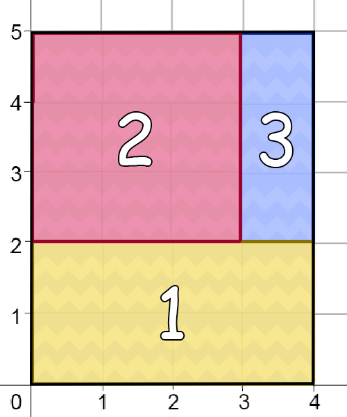
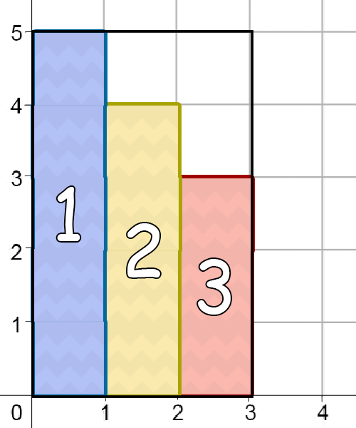

Negara Toki memiliki wilayah berbentuk persegi panjang. Denah wilayah Negara Toki dapat direpresentasikan dalam sistem koordinat Kartesius. Keempat titik sudut dari persegi panjang ini berada pada titik $(0, 0)$, $(N, 0)$, $(N, M)$, dan $(0, M)$.
Pak Dengklek sebagai Menteri Pertahanan dari Negara Toki ingin membagi wilayah negara menjadi $K$ wilayah pertahanan, yang dinomori dari $1$ hingga $K$. Berikut adalah ketentuan masing-masing wilayah pertahanan yang diinginkan Pak Dengklek.
Pak Dengklek meminta Anda untuk melakukan pembagian wilayah tersebut sesuai dengan persyaratan di atas. Selain itu, Pak Dengklek ingin agar wilayah pertahanan ke-$i$ memiliki luas $A_i$. Anda diperbolehkan untuk tidak mengikuti permintaan ini, tetapi Pak Dengklek akan lebih bahagia apabila Anda dapat memberi wilayah sesuai dengan luas yang Pak Dengklek inginkan.
Sebut wilayah pertahanan ke-$i$ yang Anda buat memiliki luas $B_i$. Untuk setiap wilayah pertahanan $i$, nilai kebahagiaan Pak Dengklek akan bertambah sebesar:
Bantu Pak Dengklek dalam menentukan pembagian wilayah pertahanan! Apabila terdapat lebih dari satu solusi, keluarkan yang mana saja. Anda diperbolehkan untuk tidak memasukkan sebagian wilayah Negara Toki ke dalam suatu wilayah pertahanan. Nilai Anda akan bergantung pada total nilai kebahagiaan Pak Dengklek, menggunakan rumus yang akan dijelaskan pada bagian Penilaian.
Soal ini bertipe "output-only". Untuk setiap kasus uji, Anda menuliskan keluaran program ke dalam sebuah berkas keluaran.
Masukan untuk soal ini dapat diunduh di bagian Lampiran yang terdapat di bagian bawah soal.
Di dalam berkas .zip tersebut terdapat $2 + 10$ masukan untuk diselesaikan: pertahanan_contoh_1.in,
pertahanan_contoh_2.in, pertahanan_1.in, pertahanan_2.in,
..., pertahanan_10.in. Masukan contoh (pertahanan_contoh_1.in dan
pertahanan_contoh_2.in) tidak termasuk dalam penilaian peserta.
Untuk setiap berkas masukan yang diselesaikan (Anda tidak harus menyelesaikan semua masukan),
buatlah berkas keluaran dengan nama pertahanan_contoh_T.out (untuk masukan contoh) atau
pertahanan_T.out, dengan T adalah nomor kasus uji. Kemudian, kompres
semua berkas keluaran ke dalam sebuah berkas .zip. Jika Anda membuat program untuk membantu
menyelesaikan soal ini, masukkan semua kode program Anda ke dalam berkas .zip tersebut, lalu kumpulkan.
Masukan diberikan dalam format berikut:
N M K A1 A2 ... AK
$K$ baris: baris ke-$i$ berisi $4$ buah bilangan bulat $x_1, x_2, y_1,$ dan $y_2$
yang menunjukkan bahwa titik-titik sudut wilayah pertahanan ke-$i$ berada pada titik $(x_1, y_1)$,
$(x_2, y_1)$, $(x_2, y_2)$, dan $(x_1, y_2)$. Apabila Anda tidak ingin membagikan wilayah
untuk wilayah pertahanan ke-$i$, keluarkan -1 -1 -1 -1.
Contoh ini dapat diilustrasikan dengan gambar berikut. Nomor yang tertera dalam persegi panjang pada gambar bersesuaian dengan nomor wilayah pertahanan. Karena semua wilayah pertahanan memiliki luas sesuai dengan yang Pak Dengklek minta, maka total nilai kebahagiaan Pak Dengklek adalah $3 + 3 + 3 = 9$. Berdasarkan rumus yang ada di bagian Penilaian, nilai yang diperoleh dari contoh keluaran ini adalah $10$.

Contoh ini dapat diilustrasikan dengan gambar berikut. Nomor yang tertera dalam persegi panjang pada gambar bersesuaian dengan nomor wilayah pertahanan. Perhatikan bahwa pada contoh keluaran ini, wilayah pertahanan ke-$4$ tidak mendapat pembagian wilayah. Selain itu, terdapat sebagian wilayah Negara Toki yang tidak berada di dalam wilayah pertahanan mana pun. Total nilai kebahagiaan Pak Dengklek adalah $3 + 3 + 3 + 0 = 9$. Berdasarkan rumus yang ada di bagian Penilaian, nilai yang diperoleh dari contoh keluaran ini adalah $5$.

Keluaran Anda akan mendapatkan nilai pada sebuah kasus uji jika keluaran Anda mengikuti format keluaran yang disebutkan sebelumnya dan memenuhi semua syarat yang Pak Dengklek minta.
Jika $X$ adalah total nilai kebahagiaan Pak Dengklek berdasarkan pembagian wilayah pertahanan Anda, maka nilai yang Anda dapatkan adalah:
| Kondisi | Poin |
|---|---|
| $X = 3K$ | $10$ |
| $X < 3K$ | $\lfloor (\frac{X}{K})^2 \rceil$ |
Notasi $\lfloor x \rceil$ mengembalikan nilai pembulatan $x$ ke bilangan bulat terdekat, dengan pecahan $0.5$ dibulatkan ke atas. Untuk semua masukan, dijamin bahwa terdapat keluaran yang mendapatkan nilai $10$.
Untuk semua subsoal, berlaku:
Berkas masukan untuk soal ini tersedia di sini.